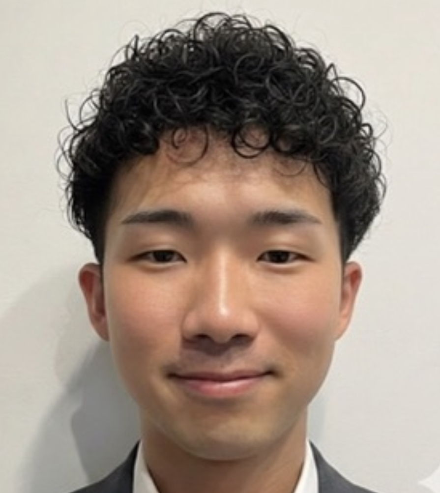

毎回ゼロから説明している
AIとの会話が単発で終わり、事業の背景や過去の判断が蓄積されない。
The Real Problem
「使っている」と 「使いこなしている」の間には差がある
必要なのは、ツールの機能説明ではなく、あなたの仕事と判断基準をAIへ接続することです。
AIとの会話が単発で終わり、事業の背景や過去の判断が蓄積されない。
会議メモ、学び、アイデア、タスクがつながらず、必要なときに使えない。
Webや資料の小さな修正にも時間がかかり、試したいアイデアをすぐ形にできない。
一度直したことが次回に活かされず、同じレビューを何度も繰り返してしまう。
Three Outcomes
コンサル終了後も、新しい課題を自分で分解し、試作し、評価し、改善できる状態を目指します。
Obsidianに、自分の経験・会話・学び・判断を蓄積。Daily / Weekly / Monthlyの振り返りで、過去の自分と対話できる基盤を作ります。
RememberCursorと複数のAIモデルを使い、Webサイト、自己紹介資料、小さなWebアプリを制作。外注前の試作や小さな改善を、自分で進められます。
Createリサーチ、Web、資料作成など役割別のAI社員を設計。良い点・直す点を学習資産に変え、あなたの事業への適合度を高めます。
GrowBefore / After
12-Session Roadmap
前半で個人のAI基盤を作り、後半で経営者自身の業務へ接続します。進捗を優先し、宿題が必要な場合は次回を延期できます。
Obsidian、Cursor、GitHub、スマートフォンを準備し、AIと働く基盤を開きます。
Daily、People、Projects、Learning、Self、AI Employees、Tasksを設計します。
Weekly / Monthly Reviewを作り、過去の記録から変化と次の行動を言語化します。
Plan → 実装 → 確認 → 修正を体験し、自分の課題に合う試作品を作ります。
Obsidianの自分の情報から、Webサイトとプレゼン資料を制作します。
役割、責任、参照知識、出力形式、禁止事項、人間の確認項目を定義します。
初版と改善版を比較し、Skill・Knowledge・Rulesへ学びを蓄積します。
組織図、スキルマップ、評価推移、成果物を見える形にして運用を設計します。
インパクトと実現可能性で優先順位を決め、実装テーマを1つ選びます。
業務を入力・処理・出力・確認に分け、AI社員と最小構成の初版を作ります。
仕事で使った結果をレビューし、時間・品質・再現性を基準にv2へ改善します。
全成果を振り返り、育てるAI社員・改善する業務・30/60/90日の目標を決めます。
内容は共通フレームです。1対1の対話をもとに、あなたの経験・業務・進捗へ合わせて調整します。
What You Build
経験・人物・事業・学び・自己・AI社員・タスクをつなぐVault。
Daily / Weekly / Monthly Reviewと自己分析テンプレート。
自分の一次情報から作るWebサイトと自己紹介スライド。
実際の課題をテーマに、Cursorと一緒に作る動く試作品。
役割別の設計書、Skill、Knowledge、Rules、育成ログ、組織図。
個別プロジェクトv2、改善前後の比較、次の90日ロードマップ。
Build · Review · Visualize · Grow
毎回、成果物や実行ログを確認し、その場で具体的なフィードバックを返します。受講者が修正版を作ることで、知識ではなく再現可能な力へ変えます。

Your Partner
AI Consultant / Intex Executive Assistant
Leverages U.S.ではAI推進を担当。日本・アメリカ・中国の複数企業でAIコンサルに携わり、業務改善から実装まで伴走してきました。これまで20人以上に、1対1でAI伴走をしてきています。
AI時代に欠かせないのは、学び続ける力です。大企業・外資系の社員が参加するAIコミュニティを運営し、質の高い議論の中で現場の一次情報を自分も取りにいきながら成長しています。そこで得た知見は、コンサルでもそのまま共有します。
現在は、AI社員と人間の社員が共存できるメタバースの大規模開発にも取り組んでいます。Obsidian・Cursor・AI社員を自分の仕事に組み込み、実務で使い続ける環境づくりを実践しています。
完成品を渡すだけの代行ではなく、経営者自身がAIを使いこなし、日常の仕事に定着させられるところまで一緒に作ります。
Investment
12回で作るのは、一時的なテクニックではありません。経営者自身の経験を蓄え、制作し、AI社員と改善を続けるための仕事基盤です。
まずは無料相談で、現在地と取り組みたい業務を確認します。プログラムが合わない場合は、無理におすすめしません。
Frequently Asked Questions
参加できます。コードを暗記する講座ではなく、AIと一緒に目的を整理し、試作し、エラーを確認して改善する進め方を身につけます。
ChatGPTなどを使い始めたものの、日常業務や事業の仕組みまで落とし込めていない方に向いています。完成品だけを外注したい方には適しません。
週1回を目安に約3ヶ月ですが、宿題と実装の進捗を優先します。必要であれば次回を延期し、半年程度かけて完了することも可能です。
入力しません。会社の機密情報、顧客情報、権限のない社内資料は扱わず、公開情報・非機密素材・抽象化した業務を使います。
Obsidian、Cursor Pro、GitHubなどを使用します。契約状況に応じて必要な準備を初回に案内します。ツール利用料は受講料に含まれません。
30%から90%という表現は、レビューや知識を蓄積するほど本人の理想へ近づく育成イメージであり、成果を保証する数値ではありません。講座では本人の評価と修正工数で実際の変化を確認します。
Free Consultation
無料相談では、AIの利用状況、情報の管理方法、実装したい業務を伺い、12回で目指せる状態を整理します。
Tallyから無料相談を予約Tally予約フォームのURLを設定すると、ここから直接移動できます。